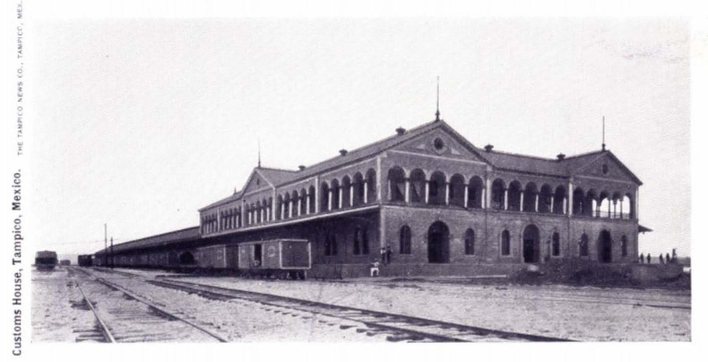
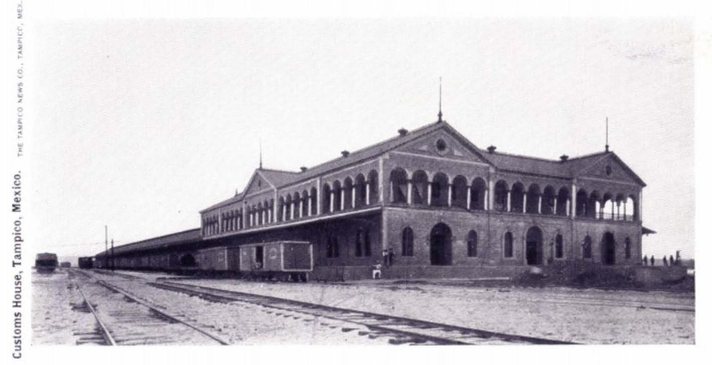

Antigua Estación de Ferrocarril
Ubicación: Zona Centro, 89000 Tampico, Tamps.
Descripción: Antigua estación de tren, restaurada para fines culturales y turísticos.
Creación: Inaugurada en 1873.
Historia
La Antigua Estación de Ferrocarril fue un punto crucial para el desarrollo económico de Tampico, conectando la ciudad con el resto del país. Construida durante el Porfiriato, esta estación fue testigo del auge petrolero de la región.
Arquitectura
El edificio muestra una arquitectura típica de finales del siglo XIX, con elementos neoclásicos y detalles ornamentales característicos de la época ferroviaria.
Actualidad
Hoy en día funciona como centro cultural donde se realizan exposiciones, eventos artísticos y actividades educativas.
Ver másLas escolleras
Ubicación: Blvd. Costero S/N, Playa Miramar, 89540 Cd Madero, Tamps.
Descripción: Formación de piedras que protege el canal de navegación hacia el puerto. Ideal para caminatas y ver delfines.
Creación: Finales del siglo XIX, mejoradas a lo largo del siglo XX.
Historia
Las escolleras fueron construidas para proteger el canal de navegación del puerto de Tampico y asegurar el acceso seguro de los buques. Su construcción marcó un hito en el desarrollo portuario de la región.
Fauna Marina
Es un punto privilegiado para la observación de delfines, pelícanos y diversas especies marinas que habitan en la zona. Los delfines suelen verse especialmente durante las primeras horas de la mañana.
Actividades
Además de la pesca deportiva, es un lugar popular para caminatas, fotografía y observación de atardeceres. Los fines de semana se llena de familias locales y turistas.
Ver másPlaza de Armas
Ubicación: Salvador Díaz Mirón 108, Zona Centro, 89000 Tampico, Tamps.
Descripción: Corazón de la ciudad, con kiosco, jardines y eventos públicos.
Creación: Finales del siglo XIX.
Historia
La Plaza de Armas ha sido el centro de la vida social de Tampico desde su fundación. Durante la época del auge petrolero, fue testigo de importantes acontecimientos históricos y reuniones sociales de la élite local.
Arquitectura
El kiosco central, construido en estilo art nouveau, es una joya arquitectónica. La plaza está rodeada de edificios históricos que muestran la arquitectura colonial y porfiriana.
Eventos Culturales
Actualmente es sede de diversos eventos culturales, conciertos de la banda municipal los domingos, y festivales tradicionales durante todo el año.
Ver más 

Antigua Aduana Marítima
Ubicación: Antigua, C. Aduana, Zona Centro, 89000 Tampico, Tamps.
Descripción: Edificio histórico que albergaba funciones aduanales, ahora museo y centro cultural.
Creación: Construido en 1902.
Historia
Este edificio fue crucial durante el boom petrolero de principios del siglo XX, cuando Tampico era uno de los puertos más importantes del mundo. Por aquí pasaron millones de barriles de petróleo que se exportaban globalmente.
Arquitectura
Construido en estilo neoclásico, el edificio destaca por sus columnas, arcadas y detalles ornamentales. Su diseño fue inspirado en las aduanas marítimas europeas de la época.
Actualidad
Hoy funciona como museo y centro cultural, albergando exposiciones sobre la historia portuaria y petrolera de Tampico. También cuenta con una importante colección fotográfica histórica.
Ver más


Plaza de la Libertad
Ubicación: Plaza de la Libertad, Benito Juárez 306, Zona Centro, 89000 Tampico, Tamps.
Descripción: Plaza histórica rodeada de edificios emblemáticos y esculturas.
Creación: Remodelada a mediados del siglo XX.
Historia
La Plaza de la Libertad ha sido testigo de importantes acontecimientos históricos de Tampico. Durante la Revolución Mexicana fue escenario de varios eventos significativos.
Monumentos
Alberga importantes monumentos y esculturas que conmemoran héroes nacionales y locales. La estatua central de la libertad es un símbolo emblemático de la plaza.
Entorno Cultural
Está rodeada de edificios históricos como el Palacio Municipal y la Catedral de Tampico. Es un punto de encuentro popular para eventos cívicos y culturales.
Ver másLaguna del Carpintero
Ubicación: Laguna del Carpintero, 89040 Tampico, Tamps.
Descripción: Es una laguna urbana rodeada de áreas verdes y miradores para observar cocodrilos. Se ha convertido en un símbolo natural de la ciudad.
Creación: Modernizada en los años 2000.
Historia Natural
La laguna debe su nombre a un carpintero que tenía su taller en sus orillas. Es un ecosistema natural que ha sobrevivido a la urbanización y ahora es un importante santuario de vida silvestre urbano.
Fauna
Hogar de una población importante de cocodrilos de río, aves migratorias y especies locales. Los cocodrilos son la principal atracción y símbolo de la laguna.
Actividades Recreativas
Cuenta con paseos en lancha, áreas de ejercicio, parque lineal y espacios para picnic. El malecón es perfecto para caminatas y ciclismo, especialmente al atardecer.
Ver másMuseo MATT
Ubicación: Diagonal Sur - Nte 418, Los Pinos, 89138 Tampico, Tamps.
Descripción: Museo de Arte de Tampico, ofrece exposiciones de arte moderno y contemporáneo.
Creación: Inaugurado en 2004.
Colección
El MATT alberga una importante colección de arte contemporáneo mexicano y exposiciones temporales de artistas internacionales. Su acervo incluye pinturas, esculturas y arte digital.
Instalaciones
Cuenta con modernas salas de exposición, auditorio para conferencias y talleres, biblioteca especializada en arte y una tienda de souvenirs artísticos.
Programas Educativos
Ofrece talleres de arte para todas las edades, visitas guiadas para escuelas y programas especiales para artistas emergentes de la región.
Ver más


Barco Museo del Niño
Ubicación: Av. Emilio Portes Gil 2302, Obrera, 89050 Tampico, Tamps.
Descripción: Museo interactivo con forma de barco para aprendizaje infantil.
Creación: Inaugurado en 2007.
Exhibiciones
Cuenta con más de 100 exhibiciones interactivas enfocadas en ciencia, tecnología, arte y cultura marítima. Los niños pueden experimentar simuladores de navegación y conocer la vida marina.
Programas Educativos
Ofrece talleres científicos, campamentos de verano y programas especiales para escuelas. Las actividades están diseñadas para diferentes grupos de edad.
Instalaciones
El museo incluye un planetario, laboratorio de ciencias, área de exposiciones temporales y un café temático. Su diseño único en forma de barco lo hace especialmente atractivo para los niños.
Ver más


Museo de la Ciudad Tampico
Ubicación: 20 de Noviembre 201, Zona Centro, 89000 Tampico, Tamps.
Descripción: Espacio que conserva la historia y evolución de la ciudad desde su fundación.
Creación: Inaugurado en 2009.
Colección Histórica
El museo alberga una extensa colección de fotografías, documentos y objetos que narran la historia de Tampico desde su fundación hasta la actualidad. Destaca su archivo fotográfico del boom petrolero.
Salas Temáticas
Cuenta con salas dedicadas a diferentes períodos históricos, incluyendo la época prehispánica, colonial, el auge petrolero y la modernización de la ciudad.
Actividades Culturales
Organiza regularmente conferencias sobre historia local, presentaciones de libros y talleres sobre el patrimonio cultural de Tampico.
Ver másExpoTampico
Ubicación: Blvd. A. López Mateos S/N, Obrera, 89050 Tampico, Tamps.
Descripción: Centro de convenciones utilizado para conciertos, ferias y exposiciones.
Creación: Inaugurado en 2009.
Instalaciones
Cuenta con más de 12,000 metros cuadrados de espacio para eventos, incluyendo un salón principal con capacidad para 7,000 personas, salas de conferencias y áreas de exposición.
Eventos Destacados
Ha sido sede de importantes conciertos, exposiciones comerciales, conferencias internacionales y eventos deportivos. Es el recinto más grande de su tipo en la región.
Impacto Económico
Se ha convertido en un importante motor del turismo de negocios en Tampico, atrayendo eventos y convenciones de alcance nacional e internacional.
Ver más


Mirador de Cocodrilos
Ubicación: Blvd. Fidel Velázquez 1169, Laguna del Carpintero, 89169 Tampico, Tamps.
Descripción: Plataforma para observar cocodrilos en su hábitat natural.
Creación: Acondicionado en la década de 2010.
Atracción Natural
El mirador ofrece una vista privilegiada de los cocodrilos de río en su hábitat natural. Es uno de los pocos lugares en México donde se pueden observar estos reptiles en un entorno urbano seguro.
Conservación
Forma parte de un programa de conservación que protege a los cocodrilos y educa al público sobre su importancia en el ecosistema local.
Mejores Momentos
Los mejores horarios para observar a los cocodrilos son temprano en la mañana o al atardecer, especialmente durante los meses más cálidos cuando son más activos.
Ver más


Plaza Isauro Alfaro
Ubicación: Allende, Zona Centro, 89450 Cd Madero, Tamps.
Descripción: Espacio cultural para eventos al aire libre.
Creación: Remodelada recientemente en la década de 2010.
Historia
La plaza lleva el nombre de Isauro Alfaro, un importante personaje histórico de Ciudad Madero. Su remodelación la convirtió en uno de los espacios públicos más modernos de la ciudad.
Eventos Culturales
Es sede regular de festivales culturales, conciertos al aire libre, exposiciones artísticas y eventos comunitarios que atraen a visitantes de toda la zona metropolitana.
Instalaciones
Cuenta con un escenario para presentaciones, áreas verdes, fuentes decorativas y espacios de descanso. Su diseño moderno incluye iluminación LED y sistema de sonido para eventos.
Ver más


Canal de la Cortadura
Ubicación: Desde la laguna hasta el río Pánuco.
Descripción: Paseo turístico con jardines, lanchas y esculturas.
Creación: Obra original del siglo XIX, modernizada en 2015.
Historia
El Canal de la Cortadura fue originalmente construido para conectar la Laguna del Carpintero con el Río Pánuco. Su modernización en 2015 lo transformó en un importante espacio recreativo.
Atracciones
El paseo cuenta con jardines temáticos, esculturas artísticas, áreas de descanso y un muelle para paseos en lancha. Es especialmente popular al atardecer.
Actividades
Ofrece recorridos en lancha, áreas para ejercicio, ciclovía y espacios para eventos culturales. Los fines de semana hay presentaciones artísticas y food trucks.
Ver másAltama
Ubicación: Av. Ejército Mexicano 706, Colonias Primavera, 89130 Tampico, Tamps.
Descripción: Centro comercial moderno con tiendas de moda, cine y restaurantes.
Creación: Inaugurado en 2017.
Instalaciones
El centro comercial cuenta con más de 100 tiendas, un complejo de cines con tecnología de última generación, área de restaurantes con terraza y zona de entretenimiento familiar.
Arquitectura
Su diseño moderno incorpora elementos sustentables como iluminación natural y sistemas de ahorro de energía. La arquitectura maximiza el espacio y el confort de los visitantes.
Impacto Social
Se ha convertido en un importante punto de encuentro y entretenimiento para la zona metropolitana, generando empleos y dinamizando la economía local.
Ver más